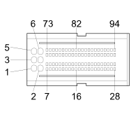

M10B ENGINE MANAGEMENT ECU ( ENGINE )
- Path
- Electrical equipment > 3 CONNECTORS > M INTERMITTENT AND TIMED ELECTRONIC DEVICES,.. > M010 ENGINE MANAGEMENT ECU > M10B ENGINE MANAGEMENT ECU ( ENGINE )
- Kind
- connector pinout (pin -> wire colour -> other end)
- Applies to
- engines: 1.2 8v, 1.6 16v, 1.3 JTD 16V, 1.9 JTD 8V, 1.9 DIESEL; all production periods
- Interactive page
- https://sloeber94.github.io/elrnDB-fDbl/en/#/223005150
Applies to: engines: 1.2 8v, 1.6 16v, 1.3 JTD 16V, 1.9 JTD 8V, 1.9 DIESEL; all production periods

Wiring | Colour |
|---|---|
NERO (black) |
Pin | Cable | Destination | |||
|---|---|---|---|---|---|
Sec.. | Colour | Nodo | Connect. | Pin | |
1 | 2,5 | N (black) | X | 1 | |
2 | |||||
See K100 FUEL HEATING RESISTANCE AND TEMPERATURE SENSOR ( ENGINE ) | 4 | ||||
1 | |||||
2 | |||||
3 | |||||
2 | 2,5 | N (black) | X | 1 | |
2 | |||||
See K100 FUEL HEATING RESISTANCE AND TEMPERATURE SENSOR ( ENGINE ) | 4 | ||||
1 | |||||
1 | |||||
3 | |||||
3 | 2,5 | N (black) | X | 1 | |
2 | |||||
See K100 FUEL HEATING RESISTANCE AND TEMPERATURE SENSOR ( ENGINE ) | 4 | ||||
1 | |||||
1 | |||||
2 | |||||
4 | 2,5 | M (brown) | X | 6 | |
18 | |||||
5 | MN (brown with black stripe) | 32 | |||
6 | 2,5 | M (brown) | X | 4 | |
18 | |||||
7 | 0,5 | HR (grey with red stripe) | 28 | ||
8 | 0,5 | HN (grey with black stripe) | X | 21 | |
1 | |||||
13 | 0,5 | ZG (violet with yellow stripe) | See K100 FUEL HEATING RESISTANCE AND TEMPERATURE SENSOR ( ENGINE ) | 1 | |
15 | 0,5 | CA (orange with light blue stripe) | |||
23 | 0,5 | BC (white with orange stripe) | 9 | ||
26 | 0,5 | BN (white with black stripe) | |||
27 | 0,5 | LB (blue with white stripe) | |||
28 | 0,5 | BV (white with green stripe) | |||
32 | 0,5 | NZ (black with violet stripe) | |||
35 | 0,5 | L (blue) | |||
41 | 0,5 | S (pink) | |||
50 | 0,5 | R (red) | X | 10 | |
23 | |||||
2 | |||||
58 | 0,5 | NS (black with pink stripe) | |||
59 | 0,5 | SB (pink with white stripe) | |||
61 | 0,5 | VG (green with yellow stripe) | See K100 FUEL HEATING RESISTANCE AND TEMPERATURE SENSOR ( ENGINE ) | 2 | |
65 | 0,5 | B (white) | |||
68 | 0,5 | SG (pink with yellow stripe) | |||
70 | 0,5 | VN (green with black stripe) | 5 | ||
74 | 0,5 | HL (grey with blue stripe) | 2 | ||
75 | 0,5 | H (grey) | 11 | ||
76 | 0,5 | GV (yellow with green stripe) | 22 | ||
79 | 0,5 | LV (blue with green stripe) | 5 | ||
80 | 0,5 | Z (violet) | 12 | ||
83 | 0,5 | G (yellow) | |||
88 | 0,5 | CN (orange with black stripe) | |||
90 | 0,5 | HG (grey with yellow stripe) | 1 | ||
92 | 0,5 | W | |||
93 | 0,5 | AB (light blue with white stripe) | |||
Topics linked from this page (10)
- 50 ENGINE
- A1H BATTERY ( ENGINE )
- B1F ENGINE COMPARTMENT JUNCTION UNIT ( ENGINE )
- D4A FRONT/ENGINE COUPLING ( FRONT )
- D4B FRONT/ENGINE COUPLING ( FRONT )
- D028 ENGINE CABLES/RADIATOR CABLE COUPLING
- K31 WATER IN DIESEL FILTER SENSOR ( ENGINE )
- K100 TEMPERATURE SENSOR AND HEATING RESISTANCE
- M10B ENGINE MANAGEMENT ECU ( ENGINE )
- M15A HEATER PLUGS CONTROLUNIT ( ENGINE )